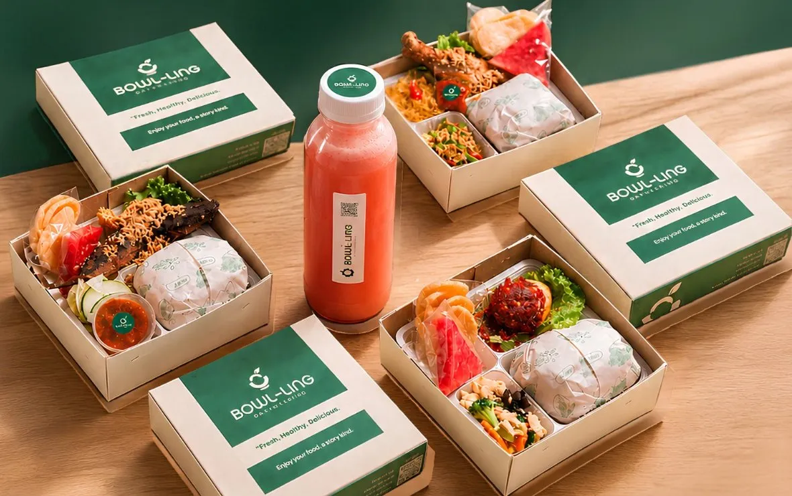
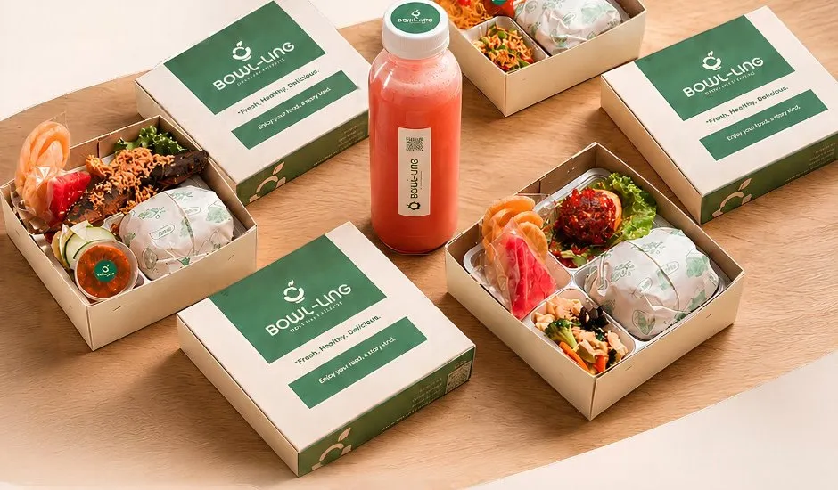

Fresh Package
Hemat untuk konsumsi rapat & pengajian
Rp15.000/pax
Isi menu: [lengkapi isi Fresh Package]
Pesan Fresh PackageCatering Jogja · Dapur di Condongcatur, Sleman
Pesan nasi box Jogja untuk rapat, seminar, pengajian, dan syukuran. Isi lengkap, kemasan rapi, diantar ke lokasi acara. Butuh hidangan prasmanan? Paket mulai Rp38.000/pax.
Langsung chat Kak Ocha · 0878-3990-0065 · [jam respons, mis. 08.00–20.00]

Harga Nasi Box Jogja
Nasi box atau nasi dus, isinya sama lengkap: nasi, lauk, sayur, sambal, dan buah, dikemas rapi per porsi. Tinggal bagikan ke tamu.
Hemat untuk konsumsi rapat & pengajian
Rp15.000/pax
Isi menu: [lengkapi isi Fresh Package]
Pesan Fresh PackageLauk lebih lengkap untuk acara kantor
Rp20.000/pax
Isi menu: [lengkapi isi Fun Package]
Pesan Fun PackagePaling komplet untuk acara keluarga
Rp23.000/pax
Isi menu: [lengkapi isi Family Package]
Pesan Family PackagePaket Prasmanan
Semua paket sudah termasuk nasi putih, sambal, kerupuk, buah potong, dan es teh.
Rp38.000/pax
Rp50.000/pax
Rp65.000/pax
Cara Pesan

[Testimoni asli pelanggan #1 — screenshot WA atau ulasan Google]
[Testimoni asli pelanggan #2]
[Testimoni asli pelanggan #3]
Bowl-Ling Fruit Bar & Kitchen melayani catering di Jogja dan Sleman dari dapur kami di Jl. Bedrek, Condongcatur. Untuk konsumsi rapat kantor, seminar kampus, atau pengajian, nasi box dan nasi dus kami jadi pilihan praktis: tiap porsi dikemas terpisah, rapi, dan mudah dibagikan.
Untuk syukuran, lamaran, atau gathering, pilih catering prasmanan dengan menu lengkap mulai Rp38.000/pax. Semua pemesanan cukup lewat WhatsApp, dan tim kami bantu menyesuaikan paket dengan jumlah tamu serta budget Anda.
Nasi box Bowl-Ling tersedia dalam 3 paket: Fresh Package Rp15.000/pax, Fun Package Rp20.000/pax, dan Family Package Rp23.000/pax.
Keduanya sebutan untuk nasi kemasan per porsi. Di Bowl-Ling, nasi dus dan nasi box memakai paket dan harga yang sama.
[Isi minimal order nasi box dan prasmanan, mis. 20 box / 50 pax]
[Isi, mis. H-2 untuk nasi box, H-7 untuk prasmanan]
Dapur kami di Condongcatur, Sleman. [Isi area antar dan ketentuan ongkir]
[Isi kebijakan custom menu, request tidak pedas, dll.]
[Isi: chafing dish, piring, sendok, waiter, dekorasi meja]
Chat Kak Ocha di WhatsApp 0878-3990-0065. Gratis tanya-tanya dulu.